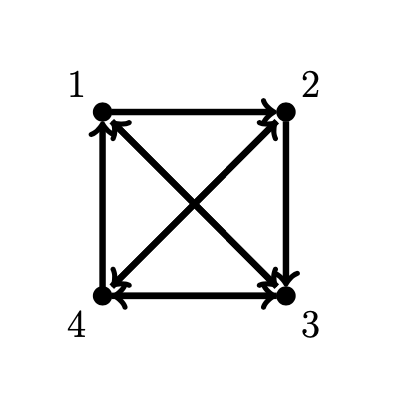

Computing Eigenvalues¶
It is not practical to compute eigenvalues of a matrix \(A\) by finding roots of the characteristic polynomial \(c_A(x)\). Instead, there are several efficient algorithms for numerically approximating eigenvalues without using \(c_A(x)\) such as the power method.
Power Method¶
Let \(A\) be a square matrix. An eigenvalue \(\lambda\) of \(A\) is called a dominant eigenvalue if \(\lambda\) has (algebraic) multiplicity 1 and \(| \lambda | > | \mu |\) for all other eigenvalues \(\mu\).
Let \(A\) be an \(n \times n\) matrix with eigenvalues \(\lambda_1,\dots,\lambda_n\) and corresponding eigenvectors \(\boldsymbol{v}_1,\dots,\boldsymbol{v}_n\) with dominant eigenvalue \(\lambda_1\). Let \(\boldsymbol{x}_0\) be any vector which is a linear combination of the eigenvectors of \(A\)
such that \(c_1 \not= 0\). Then
and therefore
because each term \(| \lambda_i/\lambda_1 | < 1\) and so \(\lambda_i/\lambda_1 \to 0\) as \(k \to \infty\). This method of approximating \(\boldsymbol{v}_1\) is called power iteration (or the power method).
The entries in the vector \(A^k \boldsymbol{x}_0\) may get very large as \(k\) increases therefore it is helpful to normalize at each step. The simplest way is to divide by \(\| \boldsymbol{x}_k \|_{\infty} = \max \{\boldsymbol{x}_k \}\)
This is called normalized power iteration. Note that \(\| A \boldsymbol{x}_k \|_{\infty}\) gives an approximation of \(\lambda_1\) at each step.
Approximate the dominant eigenvalue and eigenvector of the matrix
by 4 iterations of the normalized power method. Choose a random starting vector
and compute
Therefore we get approximations
The actual dominant eigenvector is
and we verify
therefore \(\lambda_1 \approx 2.4142\).
Rayleigh Quotient¶
Note that if \(\boldsymbol{x}\) is an eigenvector of a matrix \(A\) with eigenvalue \(\lambda\) then
Therefore if \(\boldsymbol{x}\) is an approximate eigenvector of \(A\) then an approximation of the corresponding eigenvalue is given by the Rayleigh quotient
In particular, in the power method, the sequence of Rayleigh quotients
converges to the dominant eigenvalue \(\lambda\).
Inverse Iteration¶
Let \(A\) be an \(n \times n\) matrix with eigenvalues \(\lambda_1,\dots,\lambda_n\) (in increasing order \(\lambda_1 < \lambda_2 < \cdots < \lambda_n\)) with corresponding eigenvectors \(\boldsymbol{v}_1,\dots,\boldsymbol{v}_n\). Then \(1/\lambda_1,\dots,1/\lambda_n\) are the eigenvalues of \(A^{-1}\) (in decreasing order) with corresponding eigenvectors \(\boldsymbol{v}_1,\dots,\boldsymbol{v}_n\). Inverse iteration is power iteration applied to \(A^{-1}\) to find the dominant eigenvalue \(1/\lambda_n\) of \(A^{-1}\) (equivalently, the smallest eigenvalue \(\lambda_n\) of \(A\)) with eigenvector \(\boldsymbol{v}_n\). At each step, solve the system and normalize
Compute 2 steps of inverse iterations for the matrix
Since we are going to repeatedly solve systems \(A \boldsymbol{x} = \boldsymbol{b}\), we should find the LU decomposition and use forward and backward substitution
Therefore
and in fact we see that \(A\) is positive definite and this is the Cholesky decomposition. Choose a random starting vector
and compute
Our approximation of the eigenvector of \(A\) corresponding to the smallest eigenvalue is
with eigenvalue \(\lambda \approx 0.12\) given by
The actual eigenvector is approximately
with eigenvalue
PageRank¶
The PageRank vector is the dominant eigenvector of the adjacency matrix of a directed graph and it ranks the importance of each vertex in the graph.
Consider a directed graph \(G\) with \(N\) vertices (see Wikipedia:Directed graph). The adjacency matrix is the \(N \times N\) matrix \(A = [a_{i,j}]\) where
Suppose the vertices of \(G\) represent a collection webpages and the edges represent links from one webpage to another. (We only count one link maximum from one webpage to another and no links from a webpage to itself.) The stochastic matrix of \(G\) represents the process of clicking a random link on a webpage and is given by \(P = [p_{i,j}]\) where
The entry \(p_{i,j}\) is the probability of clicking to webpage \(i\) from webpage \(j\).
Consider the directed graph

Construct the adjacency matrix \(A\) and the stochastic matrix \(P\)
The Google matrix of a directed graph \(G\) is
where \(P\) is the stochastic matrix of \(G\), \(0 < \alpha < 1\) is the teleportation parameter, \(\boldsymbol{v}\) is the teleportation distribution vector and \(\boldsymbol{e}^T = \begin{bmatrix} 1 & \cdots & 1 \end{bmatrix}\) is a vector of 1s. Note \(\boldsymbol{v} \boldsymbol{e}^T\) is the matrix with vector \(\boldsymbol{v}\) in every column. See PageRank Beyond the Web and Wikipedia:PageRank
The teleportation vector \(\boldsymbol{v}\) has entries between 0 and 1 and the entries sum to 1. In other words, it is a stochastic vector. The vector \(\boldsymbol{v}\) is usually chosen to be \(\boldsymbol{v} = (1/N)\boldsymbol{e}\) where \(N\) is the number of vertices in the graph. The stochastic matrix \(\boldsymbol{v} \boldsymbol{e}^T\) then represents the process of transitioning to a random webpage with uniform probability. The Google matrix is a stochastic matrix which represents the process: at each step, do either:
probability \(\alpha\): click a random link on the webpage to visit another webapge
probability \(1 - \alpha\): teleport to any webpage according to the distribution \(\boldsymbol{v}\)
The teleportation parameter \(\alpha\) is usually chosen to be \(\alpha = 0.85\).
Let \(G\) be a directed graph and let \(P\) be the stochastic matrix for \(G\). Choose parameters \(0 < \alpha < 0\) and \(\boldsymbol{v}\). There exists a unique steady state vector \(\boldsymbol{x}\) (with entries between 0 and 1 and the entries sum to 1) such that
The vector \(\boldsymbol{x}\) is called the PageRank vector and the entry \(x_i\) is the PageRank of the webpage at vertex \(i\). The Google search result lists the webpages in order of their PageRank.
A directed graph \(G\) represents a collection of webpages that contain the words in a Google search. The PageRank vector ranks the importance of the webpages for the search. There are usually hundreds of millions webpages in the graph therefore the Google matrix is HUGE! But the founders of Google showed that the power iteration algorithm converges well enough after about 50 iterations to find the webpages with the top PageRank.
Find the Google matrix for the directed graph in the example above for \(\alpha = 0.85\) and \(\boldsymbol{v} = (1/N) \boldsymbol{e}\). Compute
Compute 50 iterations of the power method to approximate the PageRank vector
Clearly, vertex 2 is the most important in the graph.
Exercises¶
Determine whether the statement is True or False.
The inverse iteration algorithm (without normalization) computes a recursive sequence \( A \boldsymbol{x}_{k+1} = \boldsymbol{x}_k \) where \( \boldsymbol{x}_k \) converges to:
the largest (in absolute value \( | \lambda | \)) eigenvalue of \( A \)
an eigenvector corresponding to the largest (in absolute value \( | \lambda | \)) eigenvalue of \( A \)
the smallest (in absolute value \( | \lambda | \)) eigenvalue of \( A \)
an eigenvector corresponding to the smallest (in absolute value \( | \lambda | \)) eigenvalue of \( A \)
In the power iteration algorithm, we divide by \( \| A \boldsymbol{x}_k \|_{\infty} \) in each step to:
make the algorithm run faster
prevent the entries of the vectors \( \boldsymbol{x}_k \) from becoming too large/small
produce a more accurate result
It is necessary to compute all the eigenvectors of the Google matrix to find the PageRank vector of a directed graph.
Let \( A \) be a \( 2 \times 2 \) matrix with eigenvalues \( \lambda_1 = 1 \) and \( \lambda_2 = 1/2 \) and corresponding eigenvectors
\[\begin{split} \boldsymbol{v}_1 = \begin{bmatrix} 1 \\ 2 \end{bmatrix} \hspace{10mm} \boldsymbol{v}_2 = \begin{bmatrix} -1 \\ 1 \end{bmatrix} \end{split}\]If we choose \( \boldsymbol{x}_0 = \begin{bmatrix} 1 \\ 5 \end{bmatrix} \) then the sequence \( \boldsymbol{x}_{k+1} = A \boldsymbol{x}_k \) converges to what?
Consider the same directed graph as in the example in the section on PageRank:
As \(\alpha \to 1\), describe what happens to the PageRank \(x_3\) of vertex 3.
Let \(G\) be the complete directed graph with \(N\) vertices. In other words, there is an edge from each vertex to every other vertex in \(G\) (excluding edges from a vertex to itself). Describe the Google matrix and the PageRank vector for the complete directed graph.
Find the Google matrix \(\alpha P + (1 - \alpha) \boldsymbol{v} \boldsymbol{e}^T\) for the directed graph
using teleportation parameter \(\alpha=0.5\) and uniform distribution vector \(\boldsymbol{v}\). Let \(\boldsymbol{x}_0 = \begin{bmatrix} 1 & 0 & 0 & 0 \end{bmatrix}^T\) and use Python to compute 50 iterations of the power method to approximate the PageRank vector.
Find the Google matrix \(\alpha P + (1 - \alpha) \boldsymbol{v} \boldsymbol{e}^T\) for the directed graph in the previous exercise using teleportation parameter \(\alpha=0.8\) and distribution vector \(\boldsymbol{v} = \begin{bmatrix} 0 & 1/2 & 1/2 & 0 \end{bmatrix}^T\). Let \(\boldsymbol{x}_0 = \begin{bmatrix} 1 & 0 & 0 & 0 \end{bmatrix}^T\) and use Python to compute 50 iterations of the power method to approximate the PageRank vector.
{kind=link}